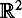

|
| |||||||||||||
|
|
||
Linear Representations are concise. In this appendix we consider the special case in which both the robot and all obstacles in the workspace are polygons (for two-dimensional worlds) or polyhedra (for three-dimensional worlds). Since polyhedra are three-dimensional solids whose faces are polygons, we begin by developing representations and computational methods for dealing with polygons. Although the restriction to polygonal obstacle may seem to be unrealistic, nearly all modern motion planning systems use polygonal models to represent obstacles (e.g., facet models that are common in computer graphics and so-called polygon soup models that are used in many CAD applications).
We begin the appendix by describing the representation of polygons in two dimensions. Following this, we describe an algorithm for determining whether two polygons intersect. This is the fundamental operation used by collision detection algorithms. We then describe an efficient algorithm that constructs a boundary representation for the configuration space obstacle region for the special case of and discuss configuration space obstacles for the case of  .
.
A straight line in the plane divides the plane into three disjoint regions: the line itself, and the two regions that lie on either side of the line. To make this more precise, consider the line given by
| (F.1) |
|
This equation implicitly defines a line to be the set of points whose projection onto the vector (a, b) is given by c. Thus, the vector (a, b) defines the normal to the line and c gives the signed perpendicular distance from the origin to the line. We can evaluate h for any point in the plane. Those points such that h(x, y) ≥ 0 are said to lie in the positive half plane, represented by h+. Points in h+ are those points whose projection onto the normal is greater than the signed distance to the line. Those points such that h(x, y) ≤ 0 are said to lie in the negative half plane, represented by h−. The line itself is the intersection h− ∩ h+. Figure F.1 shows an example for which the points (0, 5), (3, 5) lie in the negative half plane, while points (0, 0), (2, 2) lie in the positive half plane. Note that we can easily change the sense of the half planes by multiplying h by −1.
We can use half planes to construct polygons. In particular, we define a convex polygonal region in  to be the intersection of a finite number of half planes. For example, the three lines
can be used to construct a convex polygonal region by taking the intersection of the three half planes h−1, h−2, and h−3,as shown in figure F.2. For consistency, we will always define convex polygonal regions as the intersection of negative half planes. If hi(x, y) ≤ 0 for each line that defines the convex polygonal region, then the point (x, y) lies inside the corresponding polygonal region. If hi (x, y) > 0 for any line that defines the convex polygonal region, then the point lies outside the corresponding polygonal region. Note that a convex polygonal region need not be finite. For example, by our definition, the half space x + y −1 ≤ 0 is a valid convex polygonal region, even though it is unbounded (recall that a region is said to be convex if for all pairs of points in the region, the line segment connecting those points lies entirely within the region).
We define a polygonal region (possibly nonconvex) to be any subset of obtained by taking the union of a finite number of convex polygonal regions. Polygonal regions need not be bounded or connected, and connected polygonal regions need not be simply connected (e.g., the union of two disjoint convex polygons is a polygonal region, but it is not connected). Finally, a polygon is any closed, simply connected polygonal region (alternatively, a polygonal region that is homeomorphic to a closed unit disk in the plane).
It is often convenient to represent a polygon by listing its vertices, e.g., in counter-clockwise order (it is straightforward to determine the hi given the set of vertices). This approach is used in sections F.2 and F.3, where we discuss how to construct the configuration space obstacle and then how to determine if a robot intersects it.
|
|
||
|